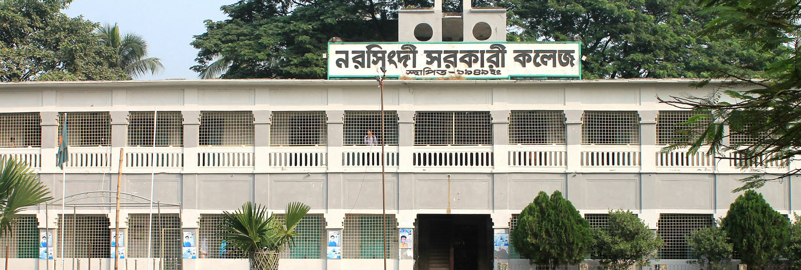

Sep 2025 - Present
Bachelor of Science in Mathematics
My current undergraduate studies in mathematics continue to strengthen my analytical thinking and problem-solving ability.
This page summarizes my education, examination results, and the subjects that interest me most.

A record of steady academic progress from primary school through university.
My current undergraduate studies in mathematics continue to strengthen my analytical thinking and problem-solving ability.